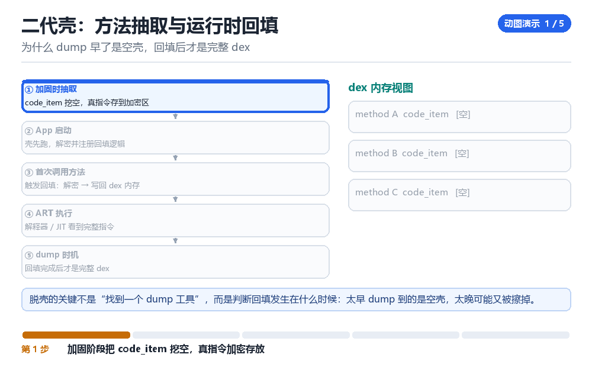

DexProtect 的加固结构与脱壳路径
抽取、混淆、反调试、VMP 的层次
先判断“这是哪一档的壳”，再决定用哪一档的方法。
2.1 四档加固
| 档位 | 做了什么 | 脱壳难度 | 对策 |
|---|---|---|---|
| 一代 | 整体加密 + 启动解密 | 低 | 内存 dump |
| 二代 | 方法抽取，运行时回填 | 中 | 定点 dump + 修复 |
| 三代 | 指令级混淆 + 反调试 | 高 | 单步 / trace 还原 |
| 四代 | VMP，指令翻译成自定义字节码 | 很高 | 找 handler 表，重建语义 |
2.2 判断档位的三个信号
- dex 里 code_item 是否为空：空 = 抽取型（二代起）。
- 是否有大量 dispatcher 函数：一个巨大的 switch/循环 = VMP 特征。
- 是否有自定义解释器：读字节码、按表分派 = 四代。
2.3 脱壳的通用流程
1. 定位 ClassLoader 与 DexFile 对象
2. 在“目标类加载完成”时触发 dump
3. 按 header.file_size 整段抓取，避免截断
4. 修复：checksum、map、class_def 顺序
5. 验证：jadx 能打开 + 关键方法有指令2.4 本章自测
- 四档加固的核心差异是什么？
- 怎么用三个信号快速判断档位？
- 抽取型壳应该在哪一刻 dump？
- VMP 的突破口在哪？
2.5 深入：抽取型壳的回填时机
壳通常把 code_item 的指令区清空，在方法第一次被调用时解密并回填。所以最佳的 dump 点就是“回填完成、方法即将执行”的那一瞬间。
// hook 方法入口
onEnter: {
// 此时指令已经回填
dump_dex_containing(this.method);
}2.6 实战：dump 出来是空的，怎么办
- 确认 dump 的时机（是不是太早）。
- 确认 dump 的地址（是不是 dump 了壳的 dex 而不是业务的）。
- 确认大小（是不是只抓了 header 那么长）。
- 换一个触发点（比如某个具体按钮点击后）。
2.7 原理推演：为什么“抽取”比“加密”难对付
加密是“整块锁起来，一次解开”；抽取是“按方法拆散，用的时候才拼回来”。后者让“dump 一次拿全”失效——你必须等到每个方法都被调用过。
| 方式 | dump 难度 | 原因 |
|---|---|---|
| 整体加密 | 低 | 一次解密全都有 |
| 方法抽取 | 高 | 要等回填 |
| 指令级 VMP | 很高 | 根本没有原始指令 |
所以“跑一遍所有功能再 dump”是应对抽取型壳的基本功——你要让每个方法都执行一次。
2.8 数据细节：判断是否抽取型的三个方法
1. dexdump -d 看 code_item 的 insns 是否为空
2. 看方法数量是否异常少（只剩桩）
3. 看是否有大量 native 方法2.9 深入：VMP 的第一道坎是“找 handler 表”
因为 dispatcher 的核心是“按字节码取 handler 地址”。找到这张表，就等于拿到了“指令集定义”。表的形式可能是数组、可能是 switch、也可能是加密后动态解开的。
| 形式 | 特征 | 找法 |
|---|---|---|
| 函数指针数组 | 一段连续的可执行地址 | 扫 data 段里的代码地址 |
| switch 跳转表 | 编译器生成的偏移表 | 看反汇编的 br 指令 |
| 加密表 | 运行时才解开 | 在解密后下断点 |
找到表之后，工作就变成“逐个 handler 分析语义”——这正是“转 IR”要解决的问题。
2.10 深入：为什么“转 IR”是正确方向
因为 VMP 的 handler 本质上就是“一条指令的实现”。把它翻译成 IR，你就回到了熟悉的领域：可以用常量折叠、可以用数据流分析、可以重建控制流。
handler_0x01: IR: t1 = t0 + t2
handler_0x02: IR: t3 = load(t1)
handler_0x03: IR: if (t3) goto L12.11 实战：先做“能跑”再做“能读”
- 先用模拟执行跑通一段字节码，确认你对 VM 模型的理解是对的。
- 再把它翻译成 IR，与手工推导的结果比对。
- 最后才做优化与美化。
jadx 窗口里全是空方法
你把 APK 拖进 jadx，类树很完整，包名、资源、Manifest 一应俱全，可点开业务类，每个方法体都是一行 throw new RuntimeException('stub') 或者干脆是空的。第一反应往往是「反编译工具坏了」——换 jadx 版本、换 apktool、换 dex2jar，折腾一圈结果一样。其实工具没错，你看到的是加固时刻意留下的骨架：真正的指令在打包阶段被从 code_item 里挖走，加密塞进了 assets 里的一块二进制，只有等某个类真的要被加载、某个方法真的要被执行，才会被解密写回内存。
所以现场该看的不是「dex 文件长什么样」，而是「进程内存里的 dex 在哪些瞬间是完整的」。把手机连上，准备好一个能扫 /proc/<pid>/maps 的脚本，再准备一个能按 dex\n035 魔数找内存块的 python 片段。前面讲过判断档位的三个信号，这里要补的是时间维度：完整 dex 在内存里往往只活几毫秒到几十毫秒，dump 工具跑得慢反而会错过它。
为什么 dump 早了是空壳，回填后才是完整 dex

从点图标到方法体被填回去，一拍一拍看
- Launcher → 对 AMS → 发一次 startActivity 的 Binder 请求 → 结果是 AMS 发现进程不存在，通过 socket 通知 zygote fork。
- 壳的 Application → 对 attachBaseContext → 抢在业务 Application 之前执行，读取 assets 里的加密块、解出二级 dex 与回填表 → 结果是进程里多出一个壳自己维护的 ClassLoader。
- 壳 ClassLoader → 对 dexElements → 把解密出来的 dex 插到查找路径前面 → 结果是后续
findClass会先命中壳的类，业务类看起来「从没出现在原始 APK 里」。 - ART 解释器 → 对 目标方法 → 首次调用时触发壳注册的回填回调 → 结果是加密区里那条真指令被解密、写回该方法对应的
code_item内存。 - ART 的 JIT → 对 已回填的方法 → 按正常路径解释或编译 → 结果是这一刻内存里的 dex 才是完整的，也是唯一值得 dump 的窗口。
- 壳的擦除逻辑 → 对 长时间不用的方法 → 有可能把
code_item再抹一次 → 结果是「跑了一遍功能再 dump」和「启动就 dump」拿到的内容可能不一样。
dump 时机怎么选，三种做法逐拍对比
- 启动时整段抓 → 对 刚映射进来的 dex → 按
header.file_size一次性读 → 结果对一代整体加密壳有效，对二代抽取壳拿到的是一堆空code_item。 - 扫魔数全内存抓 → 对 `/proc/self/maps` 里每一段可读区 → 逐块搜
dex\n035并校验 header 的file_size与map_off→ 结果能捞到壳动态释放的 dex，但会漏掉「回填前」那一瞬间的空方法。 - 挂在方法首次执行上抓 → 对 目标类的任一方法 → 在 hook 回调里立刻按 ClassLoader 定位
DexFile再整段读 → 结果最准：此时回填刚完成、擦除还没发生。
可复现实验：自己写一遍魔数扫描
import struct, sys
def find_dex(blob):
magic = b'dex\n035\x00'
out, off = [], 0
while True:
i = blob.find(magic, off)
if i < 0: break
size = struct.unpack_from('<I', blob, i + 32)[0]
out.append((hex(i), size))
off = i + 8
return out
if __name__ == '__main__':
data = open(sys.argv[1], 'rb').read()
for pos, size in find_dex(data):
print('candidate', pos, 'file_size', size)# 先确认进程与映射，别盲目 dump 整个 /proc
adb shell pidof com.example.protected
adb shell cat /proc/$(adb shell pidof com.example.protected)/maps \
| grep -E 'dex|anon' | head -40
# 用 frida 在方法首次执行时按 DexFile 整段读，比 shell 更稳
# 触发：点一次目标功能；观察：send 回来的 len 是否等于 file_size看到什么算成功：脚本打印出的 file_size 与 header 偏移 32 处读到的值一致，把该段单独切出来存成 .dex 后 jadx 能打开，而且关键方法里有真实的 invoke- / iget- 指令而不是一片 nop。看到什么算失败：jadx 报 bad checksum 或 map_list 错位，说明你按 file_size 抓的时候跨段截断了；或者方法体全是 nop，说明抓在回填之前——把触发点换成「点一次目标功能再抓」，重跑三轮确认稳定。
| 现象 | 原因 | 修法 |
|---|---|---|
| jadx 里方法体是 stub | code_item 被抽取 | 挂首次执行后再 dump |
| dump 出来 file_size 对不上 | 跨段读取被截断 | 按 maps 分段读再拼接 |
| jadx 报 bad checksum | header 里 checksum/sha1 未修 | 重算并回写 0x0C 与 0x20 两处 |
| 方法体全是 nop | 抓在回填之前 | 先跑一遍功能，再抓 |
| 只有壳的类没有业务类 | dump 错了 ClassLoader 的 dex | 按 dexPath 定位，逐个 ClassLoader 试 |
把「回填事件」这个钩子留在你的工具箱里，D03 里它会换个身份出现：顶级方案同样靠「按需触发」来省钱，只不过它按需触发的是检测而不是解密。再看 P01，VMP 把这条链又往前推了一步——连 code_item 都不填了，直接换成自定义字节码交给你自己解释。